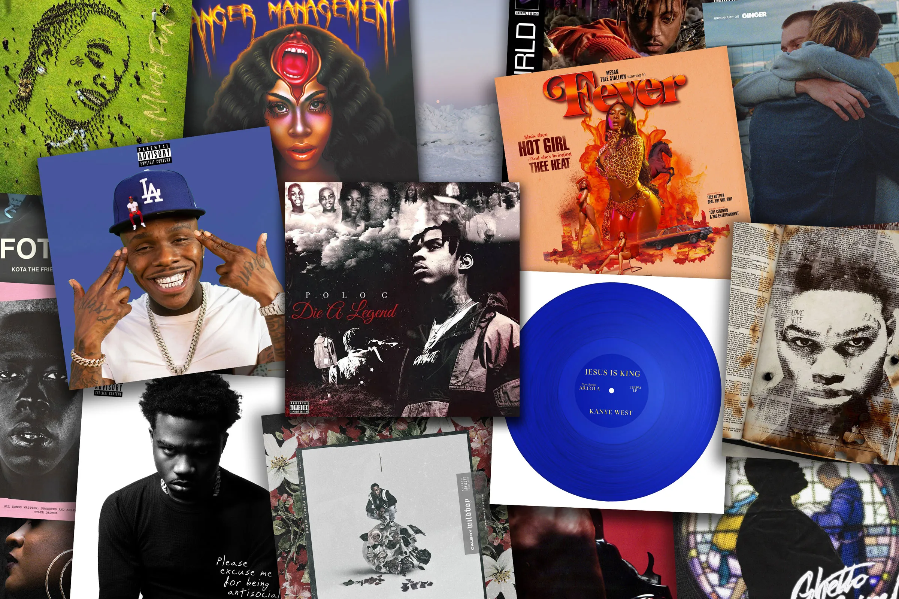

Welcome to the Best Rap Albums Site
Discover the best hip-hop records of all time.

Rap music originated in the 1970s in the Bronx, New York City, as part of the broader hip-hop culture that also included elements like DJing, breakdancing, and graffiti art. Early rap was performed at block parties and street gatherings, where DJs would loop beats from funk and soul records, creating rhythms that MCs (rappers) would rhyme over. One of the pivotal moments in the development of rap was DJ Kool Herc’s famous back-to-school jam in 1973, where he introduced the concept of the "breakbeat." By extending instrumental breaks using two turntables, Herc allowed dancers, known as B-boys and B-girls, to showcase their skills. At the same time, MCs started to hype the crowd with rhythmic, rhyming speech, laying the foundation for what would eventually become modern rap.
Golden Era of Rap
Known as the best era of rap, this period spans the late 1980s and early 1990s. Artists like Nas, Public Enemy, and Wu-Tang Clan redefined the genre with iconic albums.
Innovative Artists
Artists like Kanye West and Kendrick Lamar have transformed rap with albums that blend sounds, genres, and political messages, setting a new direction for hip-hop.
Rap Subgenres
Rap has a variety of subgenres, ranging from trap to gangsta rap. Each has produced memorable albums that have impacted both culture and the music industry.


'Illmatic' is the album that transformed rap. With impeccable lyricism, Nas captured the essence of New York's streets."
David Styles
Music critic at HipHopDX

"'To Pimp a Butterfly' is more than just a rap album. Kendrick Lamar blends poetry and politics to create a modern masterpiece."
Maria Hernandez
Rap fan

"Kanye West redefined the sound of rap with 'My Beautiful Dark Twisted Fantasy'. An album that remains a reference to this day."
Sarah Johnson
Writer at The Source